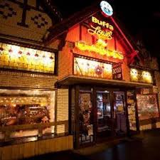
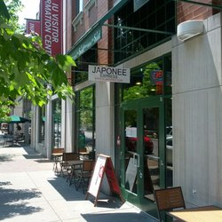
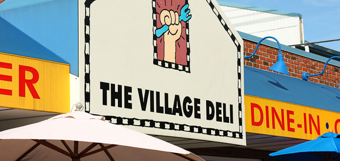

FAVORITE PLACES TABLE
| Restaurant Name | Picture | Public Rating |
|---|---|---|
| Buffalouies |  | * * * * |
| Japonee Express |  | * * * * |
| Village Delli |  | * * * * * |
Buffalouies is an excelent establishment because of its famous buffalo wings and buffalo burgers. It is located on Indiana Ave and is also open for breakfast.
Japonee Express is another awesome establishment on Indiana Avenue. It is quick and fairly inexpensive. They also serve free miso soup!
When its open, the Village Delli is the place to eat! It truly is the most delicious breakfast food you can find on Kirkwood Ave. Many frequent the Delli for their delicious omletts and pancakes.